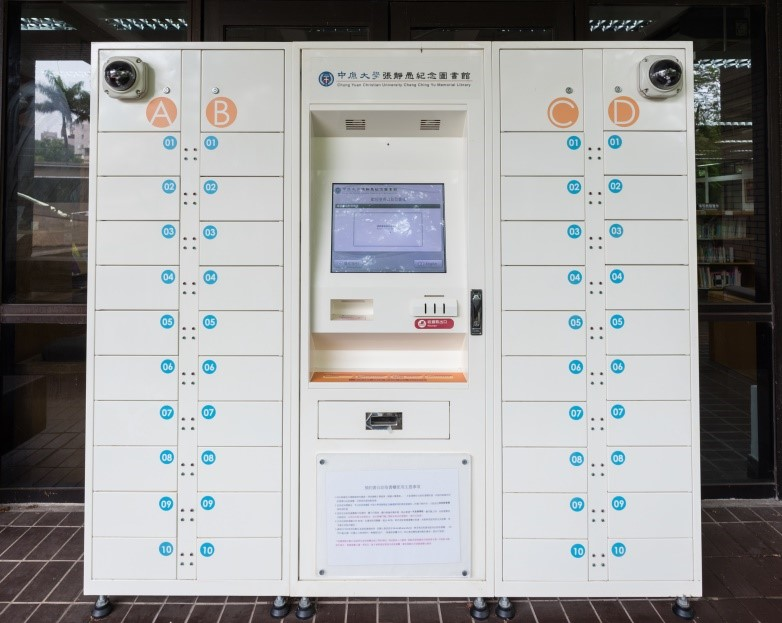
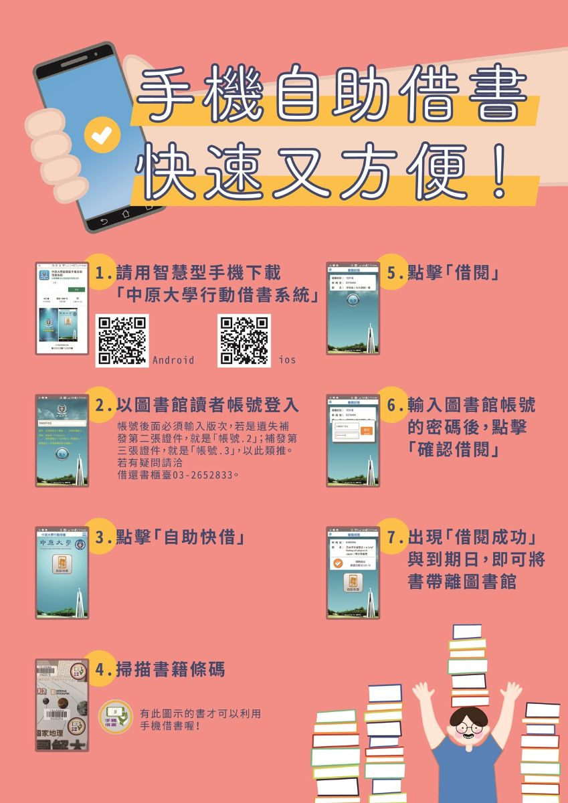
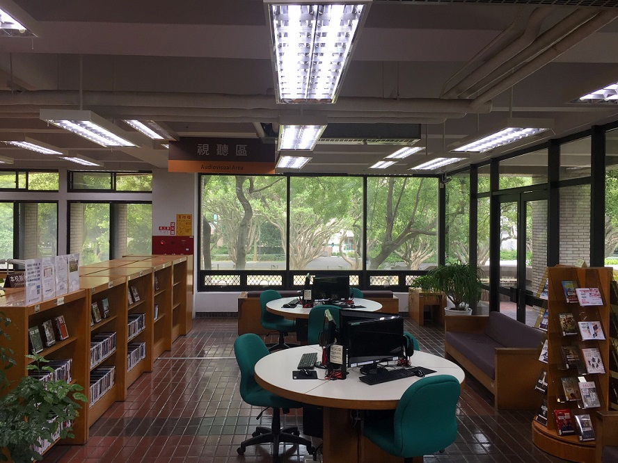

借還書 📚
提供讀者在預約張靜愚紀念圖書館的圖書時，除了在借還書櫃台取書，也可以選擇自助取書櫃取書，不受圖書館閉館時間的限制，在可取書的期限內使用借書憑證（服務證、學生證、校友證、本館借書證）領取預約書！
 - 請用智慧型手機下載「中原大學行動借書系統」
- 以圖書館讀者帳號登入，需輸入帳號版次，如「帳號 .2」
- 點擊「自助快借」
- 掃描書籍條碼
- 點擊「借閱」
- 輸入圖書館帳號的密碼後，點擊「確認借閱」
- 出現「借閱成功」與到期日，即可將書帶離圖書館
視聽服務
視聽區位於本館二樓期刊區一側，設有六個電腦座位，提供觀賞公播版視聽資料、線上VOD隨選視訊系統等閱聽服務。
扶桑花女孩
- 播映時間：11 / 4（四）12：40
- 導演：李相日
- 主演：松雪泰子、蒼井優、豐川悦司
舞動人生
- 播映時間：11 / 11（四）12：40
- 導演：史蒂芬‧戴爾卓
- 主演：茱莉華特絲、傑米貝爾
大娛樂家
- 播映時間：11 / 18（四）12：40
- 導演：麥可格雷希
- 主演：休傑克曼、柴克艾弗隆、蜜雪兒威廉斯
黑天鵝
- 播映時間：11 / 25（四）12：40
- 導演：戴倫亞洛諾夫斯基
- 配音：娜塔莉波曼
幸福綠皮書
- 播映時間：12 / 2（四）12：40
- 導演：彼得法拉利
- 主演：維果莫天森、馬赫夏拉阿里、琳達卡德莉妮
淺田家
- 播映時間：12 / 9（四）12：40
- 導演：中野量太
- 主演：二宮和也、妻夫木聰、黑木華
頂尖對決
- 播映時間：12 / 16（四）12：40
- 導演：克里斯多福‧諾蘭
- 配音：休傑克曼、克里斯汀貝爾
兔嘲男孩
- 播映時間：12 / 23（四）12：40
- 導演：塔伊加維迪提
- 配音：史嘉蕾喬韓森、 瑞貝爾威爾森
沒有硝煙的愛情
- 播映時間：12 / 30（四）12：40
- 導演：帕威‧帕利科斯基
- 配音：喬安娜庫里格、托瑪斯科特

其他服務
- 服務對象：限中原大學教職員工生及校友。
- 申請證件：憑本校服務證 / 學生證 / 校友證一張至本館二樓出入口服務台登記借用。
- 歸還時間：使用完畢請儘速歸還，俾能方便下一個使用者；最遲請於七天內歸還，如有逾期歸還，每日罰款新台幣 5 元整；如有遺失，須繳交遺失賠償及製傘費用 1 把新台幣 150 元整。
- 服務對象：限當日入館閱覽且有感冒咳嗽症狀的讀者方可以申請。
- 申請證件：憑本校服務證/學生證/校友證/圖書館核發有效閱覽證等一張， 至本館二樓出入口服務台登記使用。
- 歸還時間：免收費用，但請有感冒咳嗽症狀的讀者配合珍重愛惜使用，請勿任意浪費。
借書冊數多又沒帶提袋時，總是困擾著愛讀書的讀者。圖書館為您準備了書香袋供您借用，只要您具備借書資格即可於借書時洽出納台借用。
書香袋借用規定：
- 借用一個月，可續借 2 次。可於本館網頁點選個人借閱記錄及續借，查看其借閱記錄及辦理續借。
- 逾期罰款或遺失損毁賠償依本館借書規定辦理。
- 借出件數不計入原可借書冊數。
讀者若在圖書館內遺失或拾獲物品，請洽二樓出入口服務台辦理。
本館已開放攜帶背包入館，於二樓入口左側及地下閱覽室設有存物櫃可自行使用。
為便利讀者使用本館資源時存物之需求，提供簡易型臨時存物櫃及長期租用存物櫃二種服務。
- 簡易型臨時存物櫃服務
- 長期租用存物櫃服務